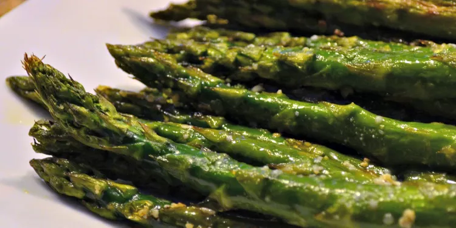

ASPARAGUS

Description
Roasted asparagus seasoned with garlic, lemon, and Parmesan cheese. This recipe is super quick to prep and roasting removes any bitterness.
Ingredients
- 1 bunch asparagus spears
- 3 tbsp olive oil
- 1 1/2 tbsp grated parmesan cheese
- 1 clove garlic, minced
- 1 tsp sea salt
- 1/2 tsp ground black pepper
- 1 tbsp lemon juice
Directions
- preheat oven to 220c
- place asparagus into a mixing bowl, drizzle with olive oil and toss to coat
- sprinkle with parmesan cheeese,garlic,salt and pepper
- arrange asparagusin a singe layer on a baking dish
- bake in oven until just tender, around 12 to 15 minuets
- remove from oven and sprinkle with lemon juice before serving